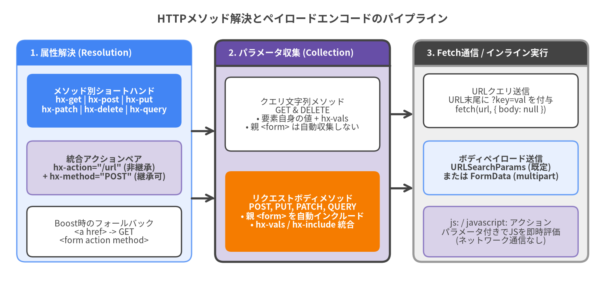

コアリクエスト属性 (Core Request Attributes)
コアリクエスト属性は、トリガーされた際にHTML要素が非同期HTTPリクエストを発行することを宣言します。htmx v4.0.1では、6つのHTTPメソッド別属性（hx-get, hx-post, hx-put, hx-patch, hx-delete, hx-query）または統合された hx-action + hx-method のペアのいずれかを使用してリクエストを宣言できます。
| シンボル | HTTPメソッド | パラメータのエンコード方式 | 親 <form> の自動インクルード |
属性継承 |
|---|---|---|---|---|
hx-get |
GET |
URLクエリ文字列 (?k=v) |
要素自身が <form> の場合のみ（または hx-include 指定時） |
非継承 |
hx-post |
POST |
リクエストボディ (URLSearchParams / FormData) |
あり (elt.form || elt.closest('form')) |
非継承 |
hx-put |
PUT |
リクエストボディ (URLSearchParams / FormData) |
あり (elt.form || elt.closest('form')) |
非継承 |
hx-patch |
PATCH |
リクエストボディ (URLSearchParams / FormData) |
あり (elt.form || elt.closest('form')) |
非継承 |
hx-delete |
DELETE |
URLクエリ文字列 (?k=v) |
要素自身が <form> の場合のみ（または hx-include 指定時） |
非継承 |
hx-query |
QUERY |
リクエストボディ (URLSearchParams / FormData) |
あり (elt.form || elt.closest('form')) |
非継承 |
hx-action |
hx-method に従う |
解決されたHTTPメソッドに準拠 | 解決されたHTTPメソッドに準拠 | 非継承 |
hx-method |
任意のHTTPメソッド文字列 | hx-action と組み合わせて使用 |
解決されたHTTPメソッドに準拠 | デフォルトで継承 |

Source Code
from drawlib.canvas import save, setup
from drawlib.lines import line
from drawlib.shapes import rectangle
from drawlib.smartarts import Panel
from drawlib.styles import Styles
from drawlib.text import text
setup(width=180, height=84, dpi=150)
text((90, 78.5), "HTTPメソッド解決とペイロードエンコードのパイプライン", style=Styles.DarkBold.patch(text_size=13.0))
# Column 1: Attribute Resolution
p1 = Panel(
"1. 属性解決 (Resolution)",
style=Styles.PrimaryNeutral,
header_style=Styles.PrimaryFlat,
text_style=Styles.WhiteBold.patch(text_size=10.5),
header_height=7.5,
)
p1.draw((5, 6), width=52, height=66, align="bottom_left")
rectangle((31, 54), width=46, height=16, style=Styles.PrimaryFlat.patch(shape_r=1.8), text="メソッド別ショートハンド\nhx-get | hx-post | hx-put\nhx-patch | hx-delete | hx-query", text_style=Styles.WhiteBold.patch(text_size=10.0))
rectangle((31, 34), width=46, height=16, style=Styles.SecondaryNeutral.patch(shape_r=1.8), text="統合アクションペア\nhx-action=\"/url\" (非継承)\n+ hx-method=\"POST\" (継承可)", text_style=Styles.DarkBold.patch(text_size=10.0))
rectangle((31, 15), width=46, height=15, style=Styles.White.patch(shape_r=1.8), text="Boost時のフォールバック\n<a href> -> GET\n<form action method>", text_style=Styles.Dark.patch(text_size=10.0))
# Column 2: Parameter Collection
p2 = Panel(
"2. パラメータ収集 (Collection)",
style=Styles.SecondaryNeutral,
header_style=Styles.SecondaryBold,
text_style=Styles.WhiteBold.patch(text_size=10.5),
header_height=7.5,
)
p2.draw((64, 6), width=52, height=66, align="bottom_left")
rectangle((90, 50), width=46, height=22, style=Styles.White.patch(shape_r=1.8), text="クエリ文字列メソッド\nGET & DELETE\n• 要素自身の値 + hx-vals\n• 親 <form> は自動収集しない", text_style=Styles.Dark.patch(text_size=10.0))
rectangle((90, 21), width=46, height=24, style=Styles.AccentFlat.patch(shape_r=1.8), text="リクエストボディメソッド\nPOST, PUT, PATCH, QUERY\n• 親 <form> を自動インクルード\n• hx-vals / hx-include 統合", text_style=Styles.WhiteBold.patch(text_size=10.0))
# Column 3: Fetch / Inline Dispatch
p3 = Panel(
"3. Fetch通信 / インライン実行",
style=Styles.Neutral,
header_style=Styles.DarkBold,
text_style=Styles.WhiteBold.patch(text_size=10.5),
header_height=7.5,
)
p3.draw((123, 6), width=52, height=66, align="bottom_left")
rectangle((149, 54), width=46, height=16, style=Styles.White.patch(shape_r=1.8), text="URLクエリ送信\nURL末尾に ?key=val を付与\nfetch(url, { body: null })", text_style=Styles.Dark.patch(text_size=10.0))
rectangle((149, 34), width=46, height=16, style=Styles.PrimaryNeutral.patch(shape_r=1.8), text="ボディペイロード送信\nURLSearchParams (既定)\nまたは FormData (multipart)", text_style=Styles.DarkBold.patch(text_size=10.0))
rectangle((149, 15), width=46, height=15, style=Styles.SecondaryNeutral.patch(shape_r=1.8), text="js: / javascript: アクション\nパラメータ付きでJSを即時評価\n(ネットワーク通信なし)", text_style=Styles.Dark.patch(text_size=10.0))
# Connectors
line((57, 45), (64, 45), arrow_head="->", style=Styles.DarkBold)
line((57, 25), (64, 25), arrow_head="->", style=Styles.DarkBold)
line((116, 50), (123, 50), arrow_head="->", style=Styles.DarkBold)
line((116, 28), (123, 28), arrow_head="->", style=Styles.DarkBold)
save()
読み取り・クエリ系メソッド (Read & Safe Query Verbs)#
このセクションの属性は、べき等な読み取りまたはクエリ操作を発行します。hx-get がパラメータをURLクエリ文字列にエンコードするのに対し、hx-query は構造化されたリクエストボディを送信する点に注目してください。
hx-get#
指定されたURLへHTTP GET リクエストを発行し、返却されたHTMLをターゲットDOMノードへスワップします。
構文 (Syntax)
<element hx-get="<url> | js:<expression>"></element>
| 項目 | htmx v4.0.1 における仕様 |
|---|---|
| HTTPメソッド | GET |
| パラメータエンコード | リクエストURLのクエリ文字列（URLSearchParams）に付与されます。ctx.request.body は null に設定されます。 |
| フォームの自動収集 | hx-get が <form> 要素自体に直接配置されている場合、または hx-include="closest form" が明示された場合を除き、外側の <form> を自動的にはシリアライズしません。 |
| 属性継承 | 非継承（allowInheritance = false）。 |
| 特殊プレフィックス | js:<expr> または javascript:<expr> を指定すると、fetch() を呼ばずにインラインJavaScriptを評価し、返された文字列をターゲットへスワップします。 |
使用例 (Usage Examples)
<!-- ターゲットコンテナへスワップする基本的なGETリクエスト -->
<button hx-get="/api/users/42" hx-target="#user-profile">
プロフィールを読み込む
</button>
<div id="user-profile"></div>
<!-- ライブ検索入力（必要に応じて hx-include で親フォームのフィルタを明示的に含める） -->
<form id="filter-form">
<select name="role">
<option value="all">すべてのロール</option>
<option value="admin">管理者</option>
</select>
<input type="search"
name="q"
hx-get="/api/users/search"
hx-include="closest form"
hx-trigger="input changed delay:300ms"
hx-target="#search-results">
</form>
<div id="search-results"></div>
hx-query#
指定されたURLへHTTP QUERY リクエスト（IETF HTTP QUERYメソッド）を発行します。hx-get とは異なり、hx-query はURLクエリ文字列ではなくHTTPリクエストボディ内にパラメータを格納して送信するため、複雑なフィルタ条件やサーバーのアクセスログ・URLバーに残したくない機密性の高い検索条件の送信に最適です。
構文 (Syntax)
<element hx-query="<url>"></element>
| 項目 | htmx v4.0.1 における仕様 |
|---|---|
| HTTPメソッド | QUERY |
| パラメータエンコード | HTTPリクエストボディで送信されます（デフォルトは URLSearchParams による application/x-www-form-urlencoded、hx-encoding="multipart/form-data" 指定時は FormData）。 |
| フォームの自動収集 | 外側の <form>（elt.form || elt.closest('form')）内のすべての入力値を自動的にインクルードします。 |
| 属性継承 | 非継承（allowInheritance = false）。 |
使用例 (Usage Examples)
<!-- URLではなくリクエストボディで構造化検索クエリを送信 -->
<form hx-query="/api/reports/aggregate" hx-target="#report-table">
<input type="date" name="start_date" value="2026-01-01">
<input type="date" name="end_date" value="2026-12-31">
<textarea name="filter_dsl">status == "active" AND region IN ("us", "jp")</textarea>
<button type="submit">クエリ実行</button>
</form>
<div id="report-table"></div>
状態変更系メソッド (State-Mutating Verbs)#
状態変更系メソッドの属性はサーバー上のリソースを変更します。htmx v4.0.1では、POST, PUT, PATCH は自動的に親 <form> から入力値を収集してリクエストボディにエンコードしますが、DELETE はパラメータをURLクエリ文字列にエンコードします。
hx-post#
指定されたURLへHTTP POST リクエストを発行し、リソースの作成やサーバーサイド処理を実行します。
構文 (Syntax)
<element hx-post="<url> | js:<expression>"></element>
| 項目 | htmx v4.0.1 における仕様 |
|---|---|
| HTTPメソッド | POST |
| パラメータエンコード | ctx.request.body で送信されます（デフォルトは URLSearchParams、hx-encoding="multipart/form-data" または <form enctype="multipart/form-data"> の場合は FormData）。 |
| フォームの自動収集 | 外側の <form>（elt.form || elt.closest('form')）および送信をトリガーしたボタン（submitter）の name=value を自動的にシリアライズします。 |
| バリデーション | <form> 上でトリガーされた場合（novalidate がない限り）または hx-validate="true" 指定時に、リクエスト送信前に form.reportValidity() を実行します。 |
| 属性継承 | 非継承（allowInheritance = false）。 |
使用例 (Usage Examples)
<!-- リスト末尾へ追加（append）する標準的なフォーム送信 -->
<form hx-post="/api/todos" hx-target="#todo-list" hx-swap="append">
<input type="text" name="title" placeholder="新しいタスク..." required>
<button type="submit">タスクを追加</button>
</form>
<ul id="todo-list"></ul>
hx-put#
指定されたURLへHTTP PUT リクエストを発行し、既存のサーバーリソースを置換します。
構文 (Syntax)
<element hx-put="<url>"></element>
| 項目 | htmx v4.0.1 における仕様 |
|---|---|
| HTTPメソッド | PUT |
| パラメータエンコード | ctx.request.body（URLSearchParams または FormData）で送信されます。 |
| フォームの自動収集 | 外側の <form>（elt.form || elt.closest('form')）を自動的にシリアライズします。 |
| 属性継承 | 非継承（allowInheritance = false）。 |
使用例 (Usage Examples)
<!-- フォーカス状態を維持する outerMorph を使ったリソース置換 -->
<form hx-put="/api/settings/notifications" hx-target="this" hx-swap="outerMorph">
<label>
<input type="checkbox" name="email_alerts" value="true" checked>
メール通知
</label>
<label>
<input type="checkbox" name="sms_alerts" value="true">
SMS通知
</label>
<button type="submit">設定を保存</button>
</form>
hx-patch#
指定されたURLへHTTP PATCH リクエストを発行し、既存のサーバーリソースに部分更新を適用します。
構文 (Syntax)
<element hx-patch="<url>"></element>
| 項目 | htmx v4.0.1 における仕様 |
|---|---|
| HTTPメソッド | PATCH |
| パラメータエンコード | ctx.request.body（URLSearchParams または FormData）で送信されます。 |
| フォームの自動収集 | 外側の <form>（elt.form || elt.closest('form')）を自動的にシリアライズします。 |
| 属性継承 | 非継承（allowInheritance = false）。 |
使用例 (Usage Examples)
<!-- change イベントでトリガーされるインラインフィールド部分更新 -->
<input type="text"
name="display_name"
value="Ada Lovelace"
hx-patch="/api/users/42/name"
hx-trigger="change"
hx-target="#save-status">
<span id="save-status"></span>
hx-delete#
指定されたURLへHTTP DELETE リクエストを発行し、サーバーリソースを削除します。
構文 (Syntax)
<element hx-delete="<url>"></element>
| 項目 | htmx v4.0.1 における仕様 |
|---|---|
| HTTPメソッド | DELETE |
| パラメータエンコード | リクエストURLのクエリ文字列に付与されます（usesQueryParams = /GET|DELETE/.test(method)）。ctx.request.body は null に設定されます。 |
| フォームの自動収集 | hx-delete が <form> に直接指定されているか hx-include を併用しない限り、親 <form> は自動収集されません。追加のクエリパラメータを渡す場合は hx-vals を使用してください。 |
| 属性継承 | 非継承（allowInheritance = false）。 |
使用例 (Usage Examples)
<!-- 確認ダイアログ後にリソースを削除し、200 OK で直近の <tr> を削除 -->
<tr id="row-108">
<td>請求書 #108</td>
<td>
<button hx-delete="/api/invoices/108"
hx-confirm="請求書 #108 を完全に削除しますか？"
hx-target="closest tr"
hx-swap="delete">
削除
</button>
</td>
</tr>
統合アクション・メソッド属性 (Unified Action & Method Attributes)#
メソッド別のショートハンド属性（hx-get, hx-post など）に加え、htmx v4.0.1ではエンドポイントURLとHTTPメソッドを分離して指定できる hx-action と hx-method が導入されています。これにより、複数のアクションボタン間で共通のHTTPメソッドを親要素から継承させることができます。
hx-action#
HTTPメソッドとは独立してリクエスト先のエンドポイントURLを指定します。要素に hx-action が存在する場合、htmxは hx-method（祖先要素からの継承を含む）からHTTPメソッドを解決し、未指定時は submitter.formmethod、elt.getAttribute('method')、最後に 'GET' へとフォールバックします。
構文 (Syntax)
<element hx-action="<url> | js:<expression>" [hx-method="<VERB>"]></element>
| 項目 | htmx v4.0.1 における仕様 |
|---|---|
| 解決の優先順位 | __determineMethodAndAction() において、hx-get, hx-post, hx-put, hx-patch, hx-delete, hx-query よりも先に評価されます。 |
| デフォルトのメソッド | hx-method（要素自身または継承）が存在すればそれを使用し、なければ evt.submitter?.formmethod -> elt.getAttribute('method') -> 'GET' の順で決定されます。 |
| 属性継承 | 非継承（allowInheritance = false）。 |
| インラインJS実行 | hx-action が js: または javascript: で始まる場合、ネットワーク通信を行わずに Object.fromEntries(ctx.request.body) をスコープに持つJavaScript式を評価し、返却された文字列をスワップします。 |
使用例 (Usage Examples)
<!-- 親要素の hx-method="POST" を複数の hx-action ボタンで共有するツールバー -->
<div hx-method="POST" hx-target="#Selection-status">
<button hx-action="/api/items/archive">選択項目をアーカイブ</button>
<button hx-action="/api/items/publish">選択項目を公開</button>
<button hx-action="/api/items/purge" hx-method="DELETE">選択項目を完全削除</button>
</div>
<div id="Selection-status"></div>
<!-- js: プレフィックスを用いたクライアントサイド生成フラグメントのスワップ -->
<button hx-action="js:`<strong>タイムスタンプ: ${new Date().toISOString()}</strong>`"
hx-target="#clock-out">
現在時刻を記録
</button>
<div id="clock-out"></div>
hx-method#
hx-action と組み合わせた際に使用するHTTPメソッド（GET, POST, PUT, PATCH, DELETE, QUERY、または任意のカスタムHTTPメソッド）を指定します。hx-action や各ショートハンド属性とは異なり、hx-method はデフォルトで子孫要素へ継承されるため、親コンテナや <form> で子孫の [hx-action] 要素に対するデフォルトHTTPメソッドを一括定義できます。
構文 (Syntax)
<element hx-method="GET | POST | PUT | PATCH | DELETE | QUERY | <CUSTOM>"></element>
| 項目 | htmx v4.0.1 における仕様 |
|---|---|
| 大文字正規化 | 自動的に大文字へ変換されます（method.toUpperCase()）。 |
| Dialogバイパス | 解決されたメソッドが 'DIALOG'（例: <form method="dialog">）の場合、ネイティブHTMLの <dialog> クローズ動作を妨げないようネットワーク処理を中断します。 |
| 属性継承 | デフォルトで継承されます（__getAttributeValue(elt, 'hx-method') がDOMツリーを上方向に探索します）。子要素側でローカルに上書き可能です。 |
使用例 (Usage Examples)
<!-- hx-post の代わりに hx-action + hx-method を使用したフォーム -->
<form hx-action="/api/projects" hx-method="POST" hx-target="#project-list" hx-swap="prepend">
<input type="text" name="name" required>
<button type="submit">プロジェクト作成</button>
</form>
<div id="project-list"></div>